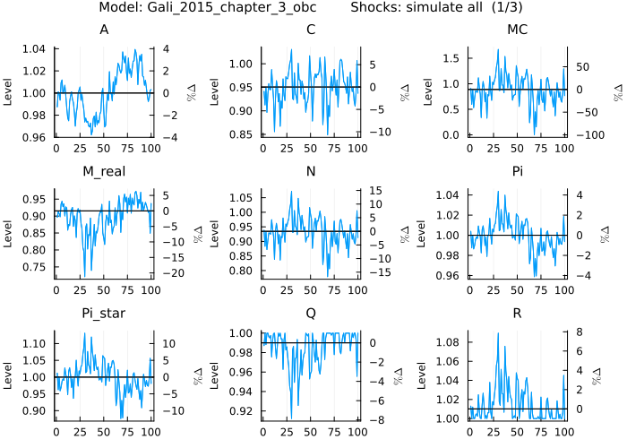
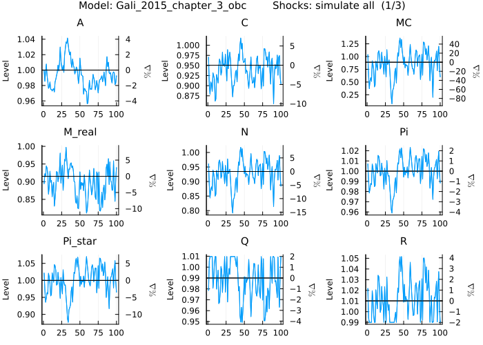
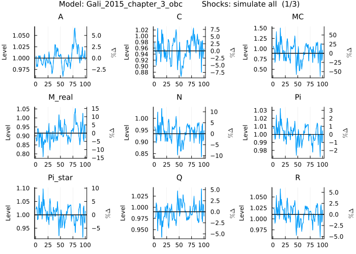
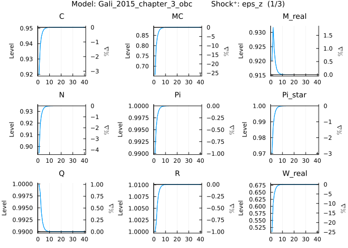
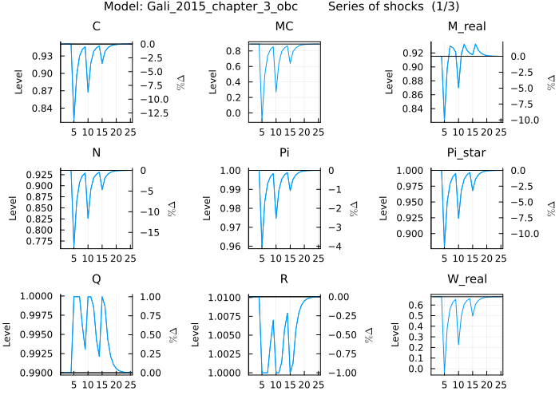
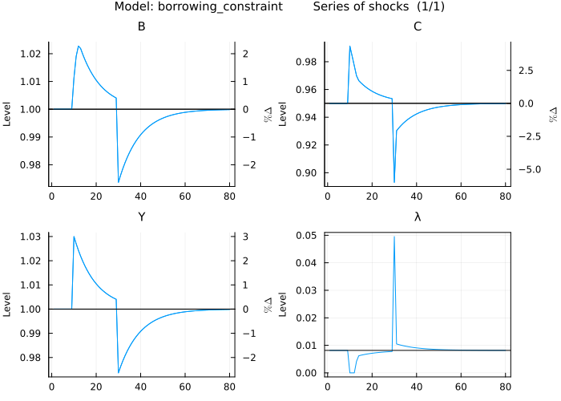
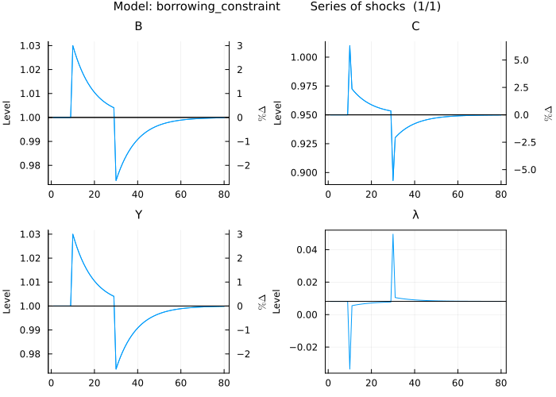

Occasionally Binding Constraints
Occasionally binding constraints are a form of nonlinearity frequently used to model effects like the zero lower bound on interest rates, or borrowing constraints. Perturbation methods are not able to capture them as they are local approximations. Nonetheless, there are ways to combine the speed of perturbation solutions and the flexibility of occasionally binding constraints. MacroModelling.jl provides a convenient way to write down the constraints and automatically enforces the constraint equation with shocks. More specifically, the constraint equation is enforced for each periods unconditional forecast (default forecast horizon of 40 periods) by constraint equation specific anticipated shocks, while minimising the shock size.
This guide will demonstrate how to write down models containing occasionally binding constraints (e.g. effective lower bound and borrowing constraint), show some potential problems the user may encounter and how to overcome them, and go through some use cases.
Common problems that may occur are that no perturbation solution is found, or that the algorithm cannot find a combination of shocks which enforce the constraint equation. The former has to do with the fact that occasionally binding constraints can give rise to more than one steady state but only one is suitable for a perturbation solution. The latter has to do with the dynamics of the model and the fact that we use a finite amount of shocks to enforce the constraint equation.
Beyond the examples outlined in this guide there is a version of Smets and Wouters (2003) with the ELB in the models folder (filename: SW03_obc.jl).
Example: Effective lower bound on interest rates
Writing a model with occasionally binding constraints
Let us take the Galı́ (2015), Chapter 3 model containing a Taylor rule and implement an effective lower bound on interest rates. The Taylor rule in the model: R[0] = 1 / β * Pi[0] ^ ϕᵖⁱ * (Y[0] / Y[ss]) ^ ϕʸ * exp(nu[0]) needs to be modified so that R[0] never goes below an effective lower bound R̄. We can do this using the max operator: R[0] = max(R̄ , 1 / β * Pi[0] ^ ϕᵖⁱ * (Y[0] / Y[ss]) ^ ϕʸ * exp(nu[0]))
The model definition after the change of the Taylor rule looks like this:
julia> using MacroModellingjulia> @model Gali_2015_chapter_3_obc begin W_real[0] = C[0] ^ σ * N[0] ^ φ Q[0] = β * (C[1] / C[0]) ^ (-σ) * Z[1] / Z[0] / Pi[1] R[0] = 1 / Q[0] Y[0] = A[0] * (N[0] / S[0]) ^ (1 - α) R[0] = Pi[1] * realinterest[0] C[0] = Y[0] log(A[0]) = ρ_a * log(A[-1]) + std_a * eps_a[x] log(Z[0]) = ρ_z * log(Z[-1]) - std_z * eps_z[x] nu[0] = ρ_ν * nu[-1] + std_nu * eps_nu[x] MC[0] = W_real[0] / (S[0] * Y[0] * (1 - α) / N[0]) 1 = θ * Pi[0] ^ (ϵ - 1) + (1 - θ) * Pi_star[0] ^ (1 - ϵ) S[0] = (1 - θ) * Pi_star[0] ^ (( - ϵ) / (1 - α)) + θ * Pi[0] ^ (ϵ / (1 - α)) * S[-1] Pi_star[0] ^ (1 + ϵ * α / (1 - α)) = ϵ * x_aux_1[0] / x_aux_2[0] * (1 - τ) / (ϵ - 1) x_aux_1[0] = MC[0] * Y[0] * Z[0] * C[0] ^ (-σ) + β * θ * Pi[1] ^ (ϵ + α * ϵ / (1 - α)) * x_aux_1[1] x_aux_2[0] = Y[0] * Z[0] * C[0] ^ (-σ) + β * θ * Pi[1] ^ (ϵ - 1) * x_aux_2[1] log_y[0] = log(Y[0]) log_W_real[0] = log(W_real[0]) log_N[0] = log(N[0]) pi_ann[0] = 4 * log(Pi[0]) i_ann[0] = 4 * log(R[0]) r_real_ann[0] = 4 * log(realinterest[0]) M_real[0] = Y[0] / R[0] ^ η R[0] = max(R̄ , 1 / β * Pi[0] ^ ϕᵖⁱ * (Y[0] / Y[ss]) ^ ϕʸ * exp(nu[0])) endModel: Gali_2015_chapter_3_obc Variables Total: 68 Auxiliary: 41 States: 44 Auxiliary: 40 Jumpers: 5 Auxiliary: 0 Shocks: 44 Parameters: 18
In the background the system of equations is augmented by a series of anticipated shocks added to the equation containing the constraint (max/min operator). This explains the large number of auxiliary variables and shocks.
Next we define the parameters including the new parameter defining the effective lower bound (which we set to 1, which implements a zero lower bound):
julia> @parameters Gali_2015_chapter_3_obc begin R̄ = 1.0 σ = 1 φ = 5 ϕᵖⁱ = 1.5 ϕʸ = 0.125 θ = 0.75 ρ_ν = 0.5 ρ_z = 0.5 ρ_a = 0.9 β = 0.99 η = 3.77 α = 0.25 ϵ = 9 τ = 0 std_a = .01 std_z = .05 std_nu = .0025 endRemove redundant variables in non-stochastic steady state problem: 1.425 seconds Set up non-stochastic steady state problem: 5.358 seconds Find non-stochastic steady state: 1.132 seconds Take symbolic derivatives up to first order: 1.443 seconds Model: Gali_2015_chapter_3_obc Variables Total: 68 Auxiliary: 41 States: 44 Auxiliary: 40 Jumpers: 5 Auxiliary: 0 Shocks: 44 Parameters: 18
Verify the non-stochastic steady state
Let's check out the non-stochastic steady state (NSSS):
julia> SS(Gali_2015_chapter_3_obc)[ Info: Most of the time is spent calculating derivatives wrt parameters. If they are not needed, add `derivatives = false` as an argument to the function call. 2-dimensional KeyedArray(NamedDimsArray(...)) with keys: ↓ Variables_and_calibrated_parameters ∈ 68-element Vector{Symbol} → Steady_state_and_∂steady_state∂parameter ∈ 19-element Vector{Symbol} And data, 68×19 Matrix{Float64}: (:Steady_state) (:R̄) … (:std_nu) (:activeᵒᵇᶜshocks) (:A) 1.0 0.0 0.0 0.0 (:C) 0.95058 0.0 0.0 0.0 (:MC) 0.888889 0.0 0.0 0.0 (:M_real) 0.915236 0.0 0.0 0.0 (:N) 0.934655 0.0 … 0.0 0.0 (:Pi) 1.0 0.0 0.0 0.0 ⋮ ⋱ (:ϵᵒᵇᶜ⁺ꜝ¹ꜝᴸ⁽⁻⁴⁰⁾) 0.0 0.0 0.0 0.0 (:ϵᵒᵇᶜ⁺ꜝ¹ꜝᴸ⁽⁻⁴⁾) 0.0 0.0 0.0 0.0 (:ϵᵒᵇᶜ⁺ꜝ¹ꜝᴸ⁽⁻⁵⁾) 0.0 0.0 … 0.0 0.0 (:ϵᵒᵇᶜ⁺ꜝ¹ꜝᴸ⁽⁻⁶⁾) 0.0 0.0 0.0 0.0 (:ϵᵒᵇᶜ⁺ꜝ¹ꜝᴸ⁽⁻⁷⁾) 0.0 0.0 0.0 0.0 (:ϵᵒᵇᶜ⁺ꜝ¹ꜝᴸ⁽⁻⁸⁾) 0.0 0.0 0.0 0.0 (:ϵᵒᵇᶜ⁺ꜝ¹ꜝᴸ⁽⁻⁹⁾) 0.0 0.0 0.0 0.0julia> SS(Gali_2015_chapter_3_obc)(:R,:)[ Info: Most of the time is spent calculating derivatives wrt parameters. If they are not needed, add `derivatives = false` as an argument to the function call. 1-dimensional KeyedArray(NamedDimsArray(...)) with keys: ↓ Steady_state_and_∂steady_state∂parameter ∈ 19-element Vector{Symbol} And data, 19-element view(::Matrix{Float64}, 9, :) with eltype Float64: (:Steady_state) 1.0101010101010102 (:R̄) 0.0 (:σ) 2.3177620163173044e-19 (:φ) -1.4515261637662033e-36 (:ϕᵖⁱ) 2.2428747972225406e-16 (:ϕʸ) 0.0 (:θ) 4.377004149731265e-17 (:ρ_ν) 0.0 ⋮ (:α) -2.239974610190369e-35 (:ϵ) -3.2695687010663664e-33 (:τ) -1.4866862421833007e-33 (:std_a) 0.0 (:std_z) 0.0 (:std_nu) 0.0 (:activeᵒᵇᶜshocks) 0.0
There are a few things to note here. First, we get the NSSS values of the auxiliary variables related to the occasionally binding constraint. Second, the NSSS value of R is 1, and thereby the effective lower bound is binding in the NSSS. While this is a viable NSSS it is not a viable approximation point for perturbation. We can only find a perturbation solution if the effective lower bound is not binding in NSSS. Calling get_solution reveals that there is no stable solution at this NSSS:
julia> get_solution(Gali_2015_chapter_3_obc)2-dimensional KeyedArray(NamedDimsArray(...)) with keys: ↓ Steady_state__States__Shocks ∈ 89-element Vector{Symbol} → Variables ∈ 68-element Vector{Symbol} And data, 89×68 adjoint(::Matrix{Float64}) with eltype Float64: (:A) … (:ϵᵒᵇᶜ⁺ꜝ¹ꜝᴸ⁽⁻⁸⁾) (:ϵᵒᵇᶜ⁺ꜝ¹ꜝᴸ⁽⁻⁹⁾) (:Steady_state) 1.0 0.0 0.0 (:A₍₋₁₎) 0.9 0.0 0.0 (:S₍₋₁₎) 7.42391e-16 0.0 0.0 (:Z₍₋₁₎) 4.07056e-16 0.0 0.0 (:nu₍₋₁₎) -6.23659e-16 … 0.0 0.0 (:ϵᵒᵇᶜ⁺ꜝ¹ꜝᴸ⁽⁻²²⁾₍₋₁₎) 2.69796e-16 0.0 0.0 ⋮ ⋱ ⋮ (:ϵᵒᵇᶜ⁺ꜝ¹ꜝ⁽⁴⁰⁾₍ₓ₎) -0.0 -0.0 -0.0 (:ϵᵒᵇᶜ⁺ꜝ¹ꜝ⁽⁴⁾₍ₓ₎) -0.0 -0.0 -0.0 (:ϵᵒᵇᶜ⁺ꜝ¹ꜝ⁽⁵⁾₍ₓ₎) -0.0 … -0.0 -0.0 (:ϵᵒᵇᶜ⁺ꜝ¹ꜝ⁽⁶⁾₍ₓ₎) -0.0 -0.0 -0.0 (:ϵᵒᵇᶜ⁺ꜝ¹ꜝ⁽⁷⁾₍ₓ₎) -0.0 -0.0 -0.0 (:ϵᵒᵇᶜ⁺ꜝ¹ꜝ⁽⁸⁾₍ₓ₎) -0.0 -0.0 -0.0 (:ϵᵒᵇᶜ⁺ꜝ¹ꜝ⁽⁹⁾₍ₓ₎) -0.0 -0.0 -0.0
In order to get the other viable NSSS we have to restrict the values of R to be larger than the effective lower bound. We can do this by adding a constraint on the variable in the @parameter section. Let us redefine the model:
julia> @model Gali_2015_chapter_3_obc begin W_real[0] = C[0] ^ σ * N[0] ^ φ Q[0] = β * (C[1] / C[0]) ^ (-σ) * Z[1] / Z[0] / Pi[1] R[0] = 1 / Q[0] Y[0] = A[0] * (N[0] / S[0]) ^ (1 - α) R[0] = Pi[1] * realinterest[0] C[0] = Y[0] log(A[0]) = ρ_a * log(A[-1]) + std_a * eps_a[x] log(Z[0]) = ρ_z * log(Z[-1]) - std_z * eps_z[x] nu[0] = ρ_ν * nu[-1] + std_nu * eps_nu[x] MC[0] = W_real[0] / (S[0] * Y[0] * (1 - α) / N[0]) 1 = θ * Pi[0] ^ (ϵ - 1) + (1 - θ) * Pi_star[0] ^ (1 - ϵ) S[0] = (1 - θ) * Pi_star[0] ^ (( - ϵ) / (1 - α)) + θ * Pi[0] ^ (ϵ / (1 - α)) * S[-1] Pi_star[0] ^ (1 + ϵ * α / (1 - α)) = ϵ * x_aux_1[0] / x_aux_2[0] * (1 - τ) / (ϵ - 1) x_aux_1[0] = MC[0] * Y[0] * Z[0] * C[0] ^ (-σ) + β * θ * Pi[1] ^ (ϵ + α * ϵ / (1 - α)) * x_aux_1[1] x_aux_2[0] = Y[0] * Z[0] * C[0] ^ (-σ) + β * θ * Pi[1] ^ (ϵ - 1) * x_aux_2[1] log_y[0] = log(Y[0]) log_W_real[0] = log(W_real[0]) log_N[0] = log(N[0]) pi_ann[0] = 4 * log(Pi[0]) i_ann[0] = 4 * log(R[0]) r_real_ann[0] = 4 * log(realinterest[0]) M_real[0] = Y[0] / R[0] ^ η R[0] = max(R̄ , 1 / β * Pi[0] ^ ϕᵖⁱ * (Y[0] / Y[ss]) ^ ϕʸ * exp(nu[0])) endModel: Gali_2015_chapter_3_obc Variables Total: 68 Auxiliary: 41 States: 44 Auxiliary: 40 Jumpers: 5 Auxiliary: 0 Shocks: 44 Parameters: 18julia> @parameters Gali_2015_chapter_3_obc begin R̄ = 1.0 σ = 1 φ = 5 ϕᵖⁱ = 1.5 ϕʸ = 0.125 θ = 0.75 ρ_ν = 0.5 ρ_z = 0.5 ρ_a = 0.9 β = 0.99 η = 3.77 α = 0.25 ϵ = 9 τ = 0 std_a = .01 std_z = .05 std_nu = .0025 R > 1.000001 endRemove redundant variables in non-stochastic steady state problem: 1.418 seconds Set up non-stochastic steady state problem: 3.246 seconds Find non-stochastic steady state: 0.802 seconds Take symbolic derivatives up to first order: 0.261 seconds Model: Gali_2015_chapter_3_obc Variables Total: 68 Auxiliary: 41 States: 44 Auxiliary: 40 Jumpers: 5 Auxiliary: 0 Shocks: 44 Parameters: 18
and check the NSSS once more:
julia> SS(Gali_2015_chapter_3_obc)[ Info: Most of the time is spent calculating derivatives wrt parameters. If they are not needed, add `derivatives = false` as an argument to the function call. 2-dimensional KeyedArray(NamedDimsArray(...)) with keys: ↓ Variables_and_calibrated_parameters ∈ 68-element Vector{Symbol} → Steady_state_and_∂steady_state∂parameter ∈ 19-element Vector{Symbol} And data, 68×19 Matrix{Float64}: (:Steady_state) (:R̄) … (:std_nu) (:activeᵒᵇᶜshocks) (:A) 1.0 0.0 0.0 0.0 (:C) 0.95058 0.0 0.0 0.0 (:MC) 0.888889 0.0 0.0 0.0 (:M_real) 0.915236 0.0 0.0 0.0 (:N) 0.934655 0.0 … 0.0 0.0 (:Pi) 1.0 0.0 0.0 0.0 ⋮ ⋱ (:ϵᵒᵇᶜ⁺ꜝ¹ꜝᴸ⁽⁻⁴⁰⁾) 0.0 0.0 0.0 0.0 (:ϵᵒᵇᶜ⁺ꜝ¹ꜝᴸ⁽⁻⁴⁾) 0.0 0.0 0.0 0.0 (:ϵᵒᵇᶜ⁺ꜝ¹ꜝᴸ⁽⁻⁵⁾) 0.0 0.0 … 0.0 0.0 (:ϵᵒᵇᶜ⁺ꜝ¹ꜝᴸ⁽⁻⁶⁾) 0.0 0.0 0.0 0.0 (:ϵᵒᵇᶜ⁺ꜝ¹ꜝᴸ⁽⁻⁷⁾) 0.0 0.0 0.0 0.0 (:ϵᵒᵇᶜ⁺ꜝ¹ꜝᴸ⁽⁻⁸⁾) 0.0 0.0 0.0 0.0 (:ϵᵒᵇᶜ⁺ꜝ¹ꜝᴸ⁽⁻⁹⁾) 0.0 0.0 0.0 0.0julia> SS(Gali_2015_chapter_3_obc)(:R)[ Info: Most of the time is spent calculating derivatives wrt parameters. If they are not needed, add `derivatives = false` as an argument to the function call. ERROR: ArgumentError: key of type Symbol is ambiguous, matches dimensions (1, 2)
Now we get R > R̄, so that the constraint is not binding in the NSSS and we can work with a stable first order solution:
julia> get_solution(Gali_2015_chapter_3_obc)2-dimensional KeyedArray(NamedDimsArray(...)) with keys: ↓ Steady_state__States__Shocks ∈ 89-element Vector{Symbol} → Variables ∈ 68-element Vector{Symbol} And data, 89×68 adjoint(::Matrix{Float64}) with eltype Float64: (:A) … (:ϵᵒᵇᶜ⁺ꜝ¹ꜝᴸ⁽⁻⁸⁾) (:ϵᵒᵇᶜ⁺ꜝ¹ꜝᴸ⁽⁻⁹⁾) (:Steady_state) 1.0 0.0 0.0 (:A₍₋₁₎) 0.9 0.0 0.0 (:S₍₋₁₎) 5.21483e-16 0.0 0.0 (:Z₍₋₁₎) 3.88236e-16 0.0 0.0 (:nu₍₋₁₎) -7.12753e-16 … 0.0 0.0 (:ϵᵒᵇᶜ⁺ꜝ¹ꜝᴸ⁽⁻²²⁾₍₋₁₎) -3.96333e-16 0.0 0.0 ⋮ ⋱ ⋮ (:ϵᵒᵇᶜ⁺ꜝ¹ꜝ⁽⁴⁰⁾₍ₓ₎) -0.0 -0.0 -0.0 (:ϵᵒᵇᶜ⁺ꜝ¹ꜝ⁽⁴⁾₍ₓ₎) -0.0 -0.0 -0.0 (:ϵᵒᵇᶜ⁺ꜝ¹ꜝ⁽⁵⁾₍ₓ₎) -0.0 … -0.0 -0.0 (:ϵᵒᵇᶜ⁺ꜝ¹ꜝ⁽⁶⁾₍ₓ₎) -0.0 -0.0 -0.0 (:ϵᵒᵇᶜ⁺ꜝ¹ꜝ⁽⁷⁾₍ₓ₎) -0.0 -0.0 -0.0 (:ϵᵒᵇᶜ⁺ꜝ¹ꜝ⁽⁸⁾₍ₓ₎) -0.0 -0.0 -0.0 (:ϵᵒᵇᶜ⁺ꜝ¹ꜝ⁽⁹⁾₍ₓ₎) -0.0 -0.0 -0.0
Generate model output
Having defined the system with an occasionally binding constraint we can simply simulate the model by calling:
julia> import StatsPlotsjulia> plot_simulations(Gali_2015_chapter_3_obc)┌ Warning: Following variable is not part of the model: a, l, l, _, e, x, c, l, u, d, i, n, g, _, a, u, x, i, l, l, i, a, r, y, _, a, n, d, _, o, b, c └ @ MacroModelling ~/work/MacroModelling.jl/MacroModelling.jl/src/MacroModelling.jl:7965 ┌ Warning: Following variable is not part of the model: a, l, l, _, e, x, c, l, u, d, i, n, g, _, a, u, x, i, l, l, i, a, r, y, _, a, n, d, _, o, b, c └ @ MacroModelling ~/work/MacroModelling.jl/MacroModelling.jl/src/MacroModelling.jl:7965 ┌ Warning: No solution in period: 26 └ @ MacroModelling ~/work/MacroModelling.jl/MacroModelling.jl/src/MacroModelling.jl:7612 Any[]

In the background an optimisation problem is set up to find the smallest shocks in magnitude which enforce the equation containing the occasionally binding constraint over the unconditional forecast horizon (default 40 periods) at each period of the simulation. The plots show multiple spells of a binding effective lower bound and many other variables are skewed as a result of the nonlinearity. It can happen that it is not possible to find a combination of shocks which enforce the occasionally binding constraint equation. In this case one solution can be to make the horizon larger over which the algorithm tries to enforce the equation. You can do this by setting the parameter at the beginning of the @model section: @model Gali_2015_chapter_3_obc max_obc_horizon = 60 begin ... end.
Next let us change the effective lower bound to 0.99 and plot once more:
julia> plot_simulations(Gali_2015_chapter_3_obc, parameters = :R̄ => 0.99)┌ Warning: Following variable is not part of the model: a, l, l, _, e, x, c, l, u, d, i, n, g, _, a, u, x, i, l, l, i, a, r, y, _, a, n, d, _, o, b, c └ @ MacroModelling ~/work/MacroModelling.jl/MacroModelling.jl/src/MacroModelling.jl:7965 ┌ Warning: Following variable is not part of the model: a, l, l, _, e, x, c, l, u, d, i, n, g, _, a, u, x, i, l, l, i, a, r, y, _, a, n, d, _, o, b, c └ @ MacroModelling ~/work/MacroModelling.jl/MacroModelling.jl/src/MacroModelling.jl:7965 Any[]

Now, the effect of the effective lower bound becomes less important as it binds less often.
If you want to ignore the occasionally binding constraint you can simply call:
julia> plot_simulations(Gali_2015_chapter_3_obc, ignore_obc = true)┌ Warning: Following variable is not part of the model: a, l, l, _, e, x, c, l, u, d, i, n, g, _, a, u, x, i, l, l, i, a, r, y, _, a, n, d, _, o, b, c └ @ MacroModelling ~/work/MacroModelling.jl/MacroModelling.jl/src/MacroModelling.jl:7965 ┌ Warning: Following variable is not part of the model: a, l, l, _, e, x, c, l, u, d, i, n, g, _, a, u, x, i, l, l, i, a, r, y, _, a, n, d, _, o, b, c └ @ MacroModelling ~/work/MacroModelling.jl/MacroModelling.jl/src/MacroModelling.jl:7965 Any[]

and you get the simulation based on the first order solution approximated around the NSSS, which is the same as the one for the model without the modified Taylor rule.
We can plot the impulse response functions for the eps_z shock, while setting the parameter of the occasionally binding constraint back to 1, as follows:
julia> plot_irf(Gali_2015_chapter_3_obc, shocks = :eps_z, parameters = :R̄ => 1.0)┌ Warning: Following variable is not part of the model: a, l, l, _, e, x, c, l, u, d, i, n, g, _, a, u, x, i, l, l, i, a, r, y, _, a, n, d, _, o, b, c └ @ MacroModelling ~/work/MacroModelling.jl/MacroModelling.jl/src/MacroModelling.jl:7965 ┌ Warning: Following variable is not part of the model: a, l, l, _, e, x, c, l, u, d, i, n, g, _, a, u, x, i, l, l, i, a, r, y, _, a, n, d, _, o, b, c └ @ MacroModelling ~/work/MacroModelling.jl/MacroModelling.jl/src/MacroModelling.jl:7965 Any[]

As you can see R remains above the effective lower bound in the first period.
Next, let us simulate the model using a series of shocks. E.g. three positive shocks to eps_z in periods 5, 10, and 15 in decreasing magnitude:
julia> shcks = zeros(1,15)1×15 Matrix{Float64}: 0.0 0.0 0.0 0.0 0.0 0.0 0.0 0.0 0.0 0.0 0.0 0.0 0.0 0.0 0.0julia> shcks[5] = 3.03.0julia> shcks[10] = 2.02.0julia> shcks[15] = 1.01.0julia> sks = KeyedArray(shcks; Shocks = [:eps_z], Periods = 1:15) # KeyedArray is provided by the `AxisKeys` package2-dimensional KeyedArray(NamedDimsArray(...)) with keys: ↓ Shocks ∈ 1-element Vector{Symbol} → Periods ∈ 15-element UnitRange{Int64} And data, 1×15 Matrix{Float64}: (1) (2) (3) (4) … (12) (13) (14) (15) (:eps_z) 0.0 0.0 0.0 0.0 0.0 0.0 0.0 1.0julia> plot_irf(Gali_2015_chapter_3_obc, shocks = sks, periods = 10)┌ Warning: Following variable is not part of the model: a, l, l, _, e, x, c, l, u, d, i, n, g, _, a, u, x, i, l, l, i, a, r, y, _, a, n, d, _, o, b, c └ @ MacroModelling ~/work/MacroModelling.jl/MacroModelling.jl/src/MacroModelling.jl:7965 ┌ Warning: Following variable is not part of the model: a, l, l, _, e, x, c, l, u, d, i, n, g, _, a, u, x, i, l, l, i, a, r, y, _, a, n, d, _, o, b, c └ @ MacroModelling ~/work/MacroModelling.jl/MacroModelling.jl/src/MacroModelling.jl:7965 Any[]

The effective lower bound is binding after all three shocks but the length of the constraint being binding varies with the shock size and is completely endogenous.
Last but not least, we can get the simulated moments of the model (theoretical moments are not available):
julia> sims = get_irf(Gali_2015_chapter_3_obc, periods = 1000, shocks = :simulate, levels = true)┌ Warning: No solution in period: 169 └ @ MacroModelling ~/work/MacroModelling.jl/MacroModelling.jl/src/MacroModelling.jl:7612 3-dimensional KeyedArray(NamedDimsArray(...)) with keys: ↓ Variables ∈ 23-element Vector{Symbol} → Periods ∈ 1000-element UnitRange{Int64} ◪ Shocks ∈ 1-element Vector{Symbol} And data, 23×1000×1 Array{Float64, 3}: [:, :, 1] ~ (:, :, :simulate): (1) … (999) (1000) (:A) 1.00456 1.0 1.0 (:C) 0.893383 0.95058 0.95058 (:MC) 0.428576 0.888889 0.888889 (:M_real) 0.894671 0.915236 0.915236 (:N) 0.853986 … 0.934655 0.934655 (:Pi) 0.980013 1.0 1.0 ⋮ ⋱ ⋮ (:nu) -0.000135444 0.0 0.0 (:pi_ann) -0.079946 … -4.44089e-16 -4.44089e-16 (:r_real_ann) 0.036057 0.0402013 0.0402013 (:realinterest) 1.00905 1.0101 1.0101 (:x_aux_1) 2.19287 3.452 3.452 (:x_aux_2) 3.39838 3.8835 3.8835
Let's look at the mean and standard deviation of borrowing:
julia> import Statisticsjulia> Statistics.mean(sims(:Y,:,:))0.9496204996644757
and
julia> Statistics.std(sims(:Y,:,:))0.016538402370019432
Compare this to the theoretical mean of the model without the occasionally binding constraint:
julia> get_mean(Gali_2015_chapter_3_obc)[ Info: Most of the time is spent calculating derivatives wrt parameters. If they are not needed, add `derivatives = false` as an argument to the function call. 2-dimensional KeyedArray(NamedDimsArray(...)) with keys: ↓ Variables ∈ 23-element Vector{Symbol} → Mean_and_∂mean∂parameter ∈ 19-element Vector{Symbol} And data, 23×19 Matrix{Float64}: (:Mean) (:R̄) … (:std_nu) (:activeᵒᵇᶜshocks) (:A) 1.0 0.0 0.0 0.0 (:C) 0.95058 0.0 0.0 0.0 (:MC) 0.888889 0.0 0.0 0.0 (:M_real) 0.915236 0.0 0.0 0.0 (:N) 0.934655 0.0 … 0.0 0.0 (:Pi) 1.0 0.0 0.0 0.0 ⋮ ⋱ (:log_y) -0.0506831 0.0 0.0 0.0 (:nu) 0.0 0.0 0.0 0.0 (:pi_ann) -4.44089e-16 0.0 … 0.0 0.0 (:r_real_ann) 0.0402013 0.0 0.0 0.0 (:realinterest) 1.0101 0.0 0.0 0.0 (:x_aux_1) 3.452 0.0 0.0 0.0 (:x_aux_2) 3.8835 0.0 0.0 0.0julia> get_mean(Gali_2015_chapter_3_obc)(:Y,:)[ Info: Most of the time is spent calculating derivatives wrt parameters. If they are not needed, add `derivatives = false` as an argument to the function call. 1-dimensional KeyedArray(NamedDimsArray(...)) with keys: ↓ Mean_and_∂mean∂parameter ∈ 19-element Vector{Symbol} And data, 19-element view(::Matrix{Float64}, 12, :) with eltype Float64: (:Mean) 0.9505798249541407 (:R̄) 0.0 (:σ) 0.006022296117038609 (:φ) 0.008029728156051456 (:ϕᵖⁱ) 1.2295405146514168e-17 (:ϕʸ) 0.0 (:θ) 0.0 (:ρ_ν) 0.0 ⋮ (:α) -0.09419214557727859 (:ϵ) 0.001650312196100938 (:τ) 0.1188224781192675 (:std_a) 0.0 (:std_z) 0.0 (:std_nu) 0.0 (:activeᵒᵇᶜshocks) 0.0
and the theoretical standard deviation:
julia> get_std(Gali_2015_chapter_3_obc)[ Info: Most of the time is spent calculating derivatives wrt parameters. If they are not needed, add `derivatives = false` as an argument to the function call. 2-dimensional KeyedArray(NamedDimsArray(...)) with keys: ↓ Variables ∈ 23-element Vector{Symbol} → Standard_deviation_and_∂standard_deviation∂parameter ∈ 19-element Vector{Symbol} And data, 23×19 Matrix{Float64}: (:Standard_deviation) … (:std_nu) (:activeᵒᵇᶜshocks) (:A) 0.0229416 1.12549e-30 0.0 (:C) 0.0335717 0.0963579 0.0 (:MC) 0.216091 0.837765 0.0 (:M_real) 0.0592662 0.254845 0.0 (:N) 0.0378695 … 0.146816 0.0 (:Pi) 0.0123588 0.0334732 0.0 ⋮ ⋱ (:log_y) 0.0353171 0.101368 0.0 (:nu) 0.00288675 1.1547 0.0 (:pi_ann) 0.049435 … 0.133893 0.0 (:r_real_ann) 0.0564465 0.253692 0.0 (:realinterest) 0.0142542 0.0640637 0.0 (:x_aux_1) 0.951526 1.44896 0.0 (:x_aux_2) 0.516659 0.269446 0.0julia> get_std(Gali_2015_chapter_3_obc)(:Y,:)[ Info: Most of the time is spent calculating derivatives wrt parameters. If they are not needed, add `derivatives = false` as an argument to the function call. 1-dimensional KeyedArray(NamedDimsArray(...)) with keys: ↓ Standard_deviation_and_∂standard_deviation∂parameter ∈ 19-element Vector{Symbol} And data, 19-element view(::Matrix{Float64}, 12, :) with eltype Float64: (:Standard_deviation) 0.033571696779991514 (:R̄) 0.0 (:σ) -0.015188891670653263 (:φ) -0.0008487527406967246 (:ϕᵖⁱ) -0.005609204146850884 (:ϕʸ) -0.03311342389433789 (:θ) 0.06235561294718621 (:ρ_ν) 0.00032874231200069647 ⋮ (:α) 0.014790836886618917 (:ϵ) 0.0006244538126498067 (:τ) 0.004196462097498942 (:std_a) 0.9241321458118882 (:std_z) 0.4817896103341106 (:std_nu) 0.0963579220668233 (:activeᵒᵇᶜshocks) 0.0
The mean of output is lower in the model with effective lower bound compared to the model without and the standard deviation is higher.
Example: Borrowing constraint
Model definition
Let us start with a consumption-saving model containing a borrowing constraint (see [@citet cuba2019likelihood] for details). Output is exogenously given, and households can only borrow up to a fraction of output and decide between saving and consumption. The first order conditions of the model are:
\[\begin{align*} Y_t + B_t &= C_t + R \, B_{t-1}\\ \log(Y_t) &= \rho \, \log(Y_{t-1}) + \sigma \, \varepsilon_t\\ C_t^{-\gamma} &= \beta \, R \, \mathbb{E}_t (C_{t+1}^{-\gamma}) + \lambda_t\\ 0 &= \lambda_t \, (B_t - mY_t) \end{align*}\]
in order to write this model down we need to express the Karush-Kuhn-Tucker condition (last equation) using a max (or min) operator, so that it becomes:
\[0 = \max(B_t - mY_t, -\lambda_t)\]
We can write this model containing an occasionally binding constraint in a very convenient way:
julia> @model borrowing_constraint begin Y[0] + B[0] = C[0] + R * B[-1] log(Y[0]) = ρ * log(Y[-1]) + σ * ε[x] C[0]^(-γ) = β * R * C[1]^(-γ) + λ[0] 0 = max(B[0] - m * Y[0], -λ[0]) endModel: borrowing_constraint Variables Total: 49 Auxiliary: 41 States: 42 Auxiliary: 40 Jumpers: 1 Auxiliary: 0 Shocks: 42 Parameters: 7
In the background the system of equations is augmented by a series of anticipated shocks added to the equation containing the constraint (max/min operator). This explains the large number of auxiliary variables and shocks.
Next we define the parameters as usual:
julia> @parameters borrowing_constraint begin R = 1.05 β = 0.945 ρ = 0.9 σ = 0.05 m = 1 γ = 1 endRemove redundant variables in non-stochastic steady state problem: 0.503 seconds Set up non-stochastic steady state problem: 0.455 seconds Find non-stochastic steady state: 0.576 seconds Take symbolic derivatives up to first order: 0.672 seconds Model: borrowing_constraint Variables Total: 49 Auxiliary: 41 States: 42 Auxiliary: 40 Jumpers: 1 Auxiliary: 0 Shocks: 42 Parameters: 7
Working with the model
For the non-stochastic steady state (NSSS) to exist the constraint has to be binding (B[0] = m * Y[0]). This implies a wedge in the Euler equation (λ > 0).
We can check this by getting the NSSS:
julia> SS(borrowing_constraint)[ Info: Most of the time is spent calculating derivatives wrt parameters. If they are not needed, add `derivatives = false` as an argument to the function call. 2-dimensional KeyedArray(NamedDimsArray(...)) with keys: ↓ Variables_and_calibrated_parameters ∈ 49-element Vector{Symbol} → Steady_state_and_∂steady_state∂parameter ∈ 8-element Vector{Symbol} And data, 49×8 Matrix{Float64}: (:Steady_state) … (:γ) (:activeᵒᵇᶜshocks) (:B) 1.0 0.0 0.0 (:C) 0.95 0.0 0.0 (:Y) 1.0 0.0 0.0 (:Χᵒᵇᶜ⁺ꜝ¹ꜝ) 0.0 0.0 0.0 (:λ) 0.00815789 … 0.000418445 0.0 (:χᵒᵇᶜ⁺ꜝ¹ꜝʳ) -0.00815789 -0.000418445 0.0 ⋮ ⋱ (:ϵᵒᵇᶜ⁺ꜝ¹ꜝᴸ⁽⁻⁴⁰⁾) 0.0 0.0 0.0 (:ϵᵒᵇᶜ⁺ꜝ¹ꜝᴸ⁽⁻⁴⁾) 0.0 0.0 0.0 (:ϵᵒᵇᶜ⁺ꜝ¹ꜝᴸ⁽⁻⁵⁾) 0.0 … 0.0 0.0 (:ϵᵒᵇᶜ⁺ꜝ¹ꜝᴸ⁽⁻⁶⁾) 0.0 0.0 0.0 (:ϵᵒᵇᶜ⁺ꜝ¹ꜝᴸ⁽⁻⁷⁾) 0.0 0.0 0.0 (:ϵᵒᵇᶜ⁺ꜝ¹ꜝᴸ⁽⁻⁸⁾) 0.0 0.0 0.0 (:ϵᵒᵇᶜ⁺ꜝ¹ꜝᴸ⁽⁻⁹⁾) 0.0 0.0 0.0
A common task is to plot impulse response function for positive and negative shocks. This should allow us to understand the role of the constraint.
First, we need to import the StatsPlots package and then we can plot the positive shock.
julia> import StatsPlotsjulia> plot_irf(borrowing_constraint)┌ Warning: Following variable is not part of the model: a, l, l, _, e, x, c, l, u, d, i, n, g, _, a, u, x, i, l, l, i, a, r, y, _, a, n, d, _, o, b, c └ @ MacroModelling ~/work/MacroModelling.jl/MacroModelling.jl/src/MacroModelling.jl:7965 ERROR: AssertionError: Could not find stable first order solution.

We can see that the constraint is no longer binding in the first five periods because Y and B do not increase by the same amount. They should move by the same amount in the case of a negative shock:
julia> import StatsPlotsjulia> plot_irf(borrowing_constraint, negative_shock = true)┌ Warning: Following variable is not part of the model: a, l, l, _, e, x, c, l, u, d, i, n, g, _, a, u, x, i, l, l, i, a, r, y, _, a, n, d, _, o, b, c └ @ MacroModelling ~/work/MacroModelling.jl/MacroModelling.jl/src/MacroModelling.jl:7965 ERROR: AssertionError: Could not find stable first order solution.

and indeed in this case they move by the same amount. The difference between a positive and negative shock demonstrates the influence of the occasionally binding constraint.
Another common exercise is to plot the impulse response functions from a series of shocks. Let's assume in period 10 there is a positive shocks and in period 30 a negative one. Let's view the results for 50 more periods. We can do this as follows:
julia> shcks = zeros(1,30)1×30 Matrix{Float64}: 0.0 0.0 0.0 0.0 0.0 0.0 0.0 0.0 … 0.0 0.0 0.0 0.0 0.0 0.0 0.0julia> shcks[10] = .60.6julia> shcks[30] = -.6-0.6julia> sks = KeyedArray(shcks; Shocks = [:ε], Periods = 1:30) # KeyedArray is provided by the `AxisKeys` package2-dimensional KeyedArray(NamedDimsArray(...)) with keys: ↓ Shocks ∈ 1-element Vector{Symbol} → Periods ∈ 30-element UnitRange{Int64} And data, 1×30 Matrix{Float64}: (1) (2) (3) (4) (5) … (27) (28) (29) (30) (:ε) 0.0 0.0 0.0 0.0 0.0 0.0 0.0 0.0 -0.6julia> plot_irf(borrowing_constraint, shocks = sks, periods = 50)┌ Warning: Following variable is not part of the model: a, l, l, _, e, x, c, l, u, d, i, n, g, _, a, u, x, i, l, l, i, a, r, y, _, a, n, d, _, o, b, c └ @ MacroModelling ~/work/MacroModelling.jl/MacroModelling.jl/src/MacroModelling.jl:7965 ERROR: AssertionError: Could not find stable first order solution.

In this case the difference between the shocks and the impact of the constraint become quite obvious. Let's compare this with a version of the model that ignores the occasionally binding constraint. In order to plot the impulse response functions without dynamically enforcing the constraint we can simply write:
julia> plot_irf(borrowing_constraint, shocks = sks, periods = 50, ignore_obc = true)┌ Warning: Following variable is not part of the model: a, l, l, _, e, x, c, l, u, d, i, n, g, _, a, u, x, i, l, l, i, a, r, y, _, a, n, d, _, o, b, c └ @ MacroModelling ~/work/MacroModelling.jl/MacroModelling.jl/src/MacroModelling.jl:7965 ERROR: AssertionError: Could not find stable first order solution.

Another interesting statistic is model moments. As there are no theoretical moments we have to rely on simulated data:
julia> sims = get_irf(borrowing_constraint, periods = 1000, shocks = :simulate, levels = true)ERROR: AssertionError: Could not find stable first order solution.
Let's look at the mean and standard deviation of borrowing:
julia> import Statisticsjulia> Statistics.mean(sims(:B,:,:))ERROR: ArgumentError: could not find key :B in vector [:A, :C, :MC, :M_real, :N, :Pi, :Pi_star, :Q, :R, :S, :W_real, :Y, :Z, :i_ann, :log_N, :log_W_real, :log_y, :nu, :pi_ann, :r_real_ann, :realinterest, :x_aux_1, :x_aux_2]
and
julia> Statistics.std(sims(:B,:,:))ERROR: ArgumentError: could not find key :B in vector [:A, :C, :MC, :M_real, :N, :Pi, :Pi_star, :Q, :R, :S, :W_real, :Y, :Z, :i_ann, :log_N, :log_W_real, :log_y, :nu, :pi_ann, :r_real_ann, :realinterest, :x_aux_1, :x_aux_2]
Compare this to the theoretical mean of the model without the occasionally binding constraint:
julia> get_mean(borrowing_constraint)[ Info: Most of the time is spent calculating derivatives wrt parameters. If they are not needed, add `derivatives = false` as an argument to the function call. 2-dimensional KeyedArray(NamedDimsArray(...)) with keys: ↓ Variables ∈ 4-element Vector{Symbol} → Mean_and_∂mean∂parameter ∈ 8-element Vector{Symbol} And data, 4×8 Matrix{Float64}: (:Mean) (:R) (:β) … (:γ) (:activeᵒᵇᶜshocks) (:B) 1.0 0.0 0.0 0.0 0.0 (:C) 0.95 -1.0 0.0 0.0 0.0 (:Y) 1.0 0.0 0.0 0.0 0.0 (:λ) 0.00815789 -0.98615 -1.10526 0.000418445 0.0
and the theoretical standard deviation:
julia> get_std(borrowing_constraint)[ Info: Most of the time is spent calculating derivatives wrt parameters. If they are not needed, add `derivatives = false` as an argument to the function call. ERROR: AssertionError: Could not find covariance matrix.
The mean of borrowing is lower in the model with occasionally binding constraints compared to the model without and the standard deviation is higher.